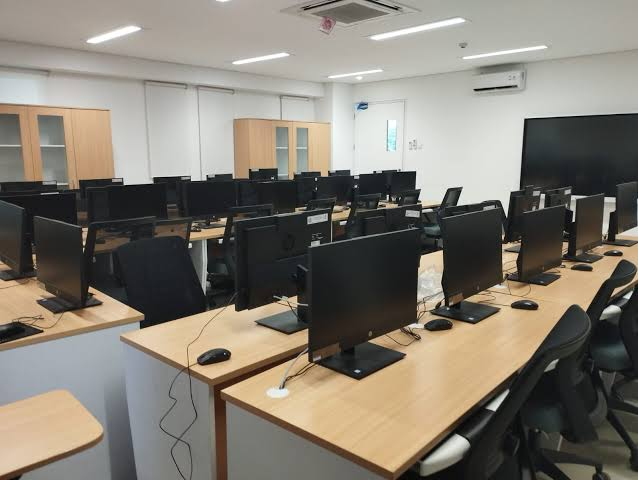

|
|
SMK Taruna Jaya Prawira |
| THE WINNER |
SMK TJP (Taruna Jaya Prawira) Tuban merupakan salah satu sekolah menengah kejuruan swasta unggulan di Kabupaten Tuban yang fokus pada pencetakan lulusan siap kerja di bidang teknologi dan industri. Sekolah ini dikenal memiliki komitmen kuat dalam menyelaraskan kurikulumnya dengan kebutuhan dunia usaha dan dunia industri (DUDI). Dengan disiplin ala taruna yang diterapkan kepada para siswanya, SMK TJP Tuban berhasil membentuk karakter peserta didik yang mandiri, bertanggung jawab, dan memiliki etos kerja tinggi yang sangat dicari oleh perusahaan besar.
Untuk menunjang proses pembelajaran, sekolah ini dilengkapi dengan fasilitas laboratorium komputer yang modern serta bengkel praktik yang representatif untuk setiap kompetensi keahlian. Berbagai program keahlian populer, mulai dari teknik mesin, teknik otomotif, hingga teknik jaringan komputer, diajarkan langsung oleh tenaga pendidik yang kompeten. Melalui kombinasi fasilitas yang memadai dan penempatan praktik kerja lapangan (PKL) di perusahaan-perusahaan mitra terkemuka, SMK TJP Tuban terus konsisten melahirkan inovasi baru dan mencetak generasi muda yang kompetitif di pasar kerja nasional maupun internasional.
| No | Program Keahlian | Lama Belajar |
|---|---|---|
| 1 | Rekayasa Perangkat Lunak | 3 tahun |
| 2 | Teknik Komputer & Jaringan | 3 tahun |
| 3 | Teknik Kendaraan Ringan | 3 tahun |
| 4 | Teknik Instalasi Tenaga Listrik | 3 tahun |
| 5 | Teknik Instalasi Tenaga Listrik | 3 tahun |
| 6 | Teknik Instalasi Tenaga Listrik | 3 tahun |
| Laboratorium Komputer | Perpustakaan | Bengkel Praktik |
|---|---|---|
 |
.jpg) |
.jpg) |
Alamat Sekolah: Jl.Dr.Wahidin Sudiro Husodo Tuban
nomor telepon: (0356) 324379
Email Sekolah: info@smktjp.sch.id
created by Pramudya fawwas Husain Gautama